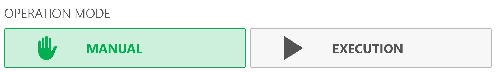
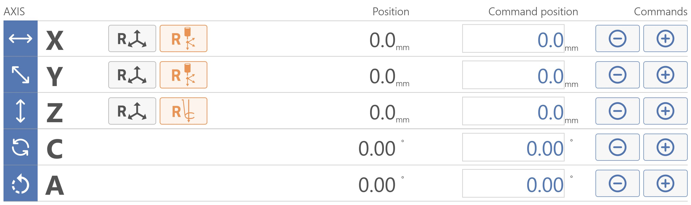
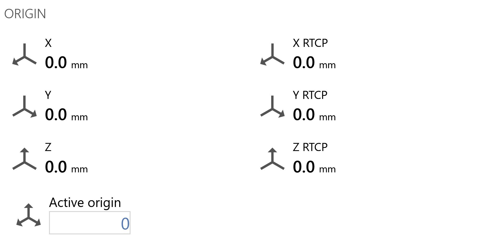
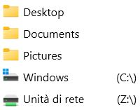

Questo riquadro è collocato nella parte superiore centrale dell’interfaccia. Permette all’operatore di eseguire le seguenti azioni:
Parcheggio automatico Quando viene premuto la macchina effettua uno spostamento in automatico degli assi “X”, “Y”, “Z”, “C” in posizione di zero. Gli spostamenti vengono effettuati dalla macchina rispettando l’ordine seguente: (A) - Asse “Z” in posizione di zero assoluto; (B) - Asse “C” in posizione di 0 assoluto; (C) - Assi “X” e “Y” contemporaneamente in posizione di Zero assoluto;
Cambia Utensile Manuale Premendo il pulsante, si avvia la procedura di cambio utensile.
Volantino Abilita/Disabilita il volantino.
Modalità operativa
Il seguente riquadro è posizionato nella parte superiore destra dell’interfaccia e permette all’operatore la seguente scelta:

Manuale Definisce se lo stato della macchina è manuale.
Esecuzione Definisce se lo stato della macchina è esecuzione.
Assi
Questo riquadro è collocato nella parte superiore sinistra dell’interfaccia. Il riquadro può assumere una forma e disposizione dei contenuti diversa in base alla modalità operativa selezionata:
Manuale
Con modalità operativa Manuale il riquadro appare come illustrato nella seguente immagine di esempio:

Pulsanti Assi
Limitatamente a questa modalità operativa sono disponibili i seguenti pulsanti:
Reset Asse Premendo questo pulsante si imposta lo zero dell’origine attiva nel punto in cui si trova il relativo asse (X, Y o Z). L’operazione di reset asse può essere eseguita solo su origini diverse dalla 0 (zero). Per utilizzare l’origine in coordinate utensile (TCP) è necessario aver impostato le misure corrette dell’utensile montato prima di premere il pulsante Reset Asse.
Reset origini X e Y Per gli assi X e Y è possibile eseguire il reset delle origini degli assi con l’ausilio del laser a croce.
Reset origine Z Per l’asse Z è possibile eseguire il reset dell’origine dell’asse con l’ausilio del tastatore lastra.
Diminuisci quota asse Fintanto che il pulsante è premuto diminuisce la quota dell’asse selezionato.
Aumenta quota asse Fintanto che il pulsante è premuto aumenta la quota dell’asse selezionato.
Esecuzione
Con modalità operativa Esecuzione il riquadro relativo agli assi viene ridimensionato. Ogni asse riporta la posizione attuale e il riquadro appare come illustrato nella seguente immagine di esempio:
DTG
Distance To Go, distanza dall’obiettivo.
FEED
Velocità di movimento espressa in mm/minuto.
A
Ampere.
Comandi Assi
Questo riquadro è collocato appena a destra del riquadro Assi, e permette le seguenti operazioni:
Coordinate RTCP La funzione RTCP consente all’operatore di effettuare un posizionamento per un taglio inclinato mantenendo l’altezza dell’utensile invariata, nonostante l’inclinazione venga variata durante il posizionamento. Il filo interno del disco rimarrà nella stessa posizione in cui si trova all’inizio della movimentazione.
Procedura di funzionamento:
Impostare la quota obiettivo nell’area dedicata all’asse “A” (inclinazione) o “C”
Premendo il pulsante RTCP parte la funzione di inclinazione o rotazione mantenendo il punto più basso dell’utensile fisso.
NOTA
La movimentazione tramite comando RTCP è consentita solamente quando la chiave codificata è inserita nella postazione adeguata, individuabile sulla console operatore.
Attendere il posizionamento della macchina alla quota impostata.
MDI / MDI RTCP Esegue lo spostamento della macchina dalle coordinate Posizione alle coordinate Posizione comandata.
NOTA
Il comando
MDI
è disponibile solo in modalità operativa
Manuale
.
Origine
Questo riquadro è collocato nella parte superiore destra dell’interfaccia, appena sotto il riquadro Modalità Operativa. Permette all’operatore di visualizzare le origini degli assi, le origini RTXP, visualizzare e modificare l’origine attiva.

Iso
Questo riquadro si estende nella parte inferiore sinistra dell’interfaccia e permette all’operatore di gestire i file ISO. Quando un ISO è caricato, l’interfaccia assume il seguente aspetto:
Barra superiore
Nella barra superiore del riquadro sono raccolte le seguenti informazioni:
Avvia Icona che rappresenta lo stato di esecuzione dell’ISO.
Progresso Mostra lo stato di avanzamento corrente della lavorazione.
Tempo stimato Mostra una stima del tempo rimanente.
Spessore Mostra lo spessore della lastra.
Barra inferiore
In questa barra posizionata nel lato inferiore del riquadro sono messi a disposizione dell’operatore i seguenti pulsanti:
Anteprima Visualizza un’anteprima del PGM selezionato in un riquadro sul lato destro del riquadro ISO.
Lavorazioni Visualizza le lavorazioni che compongono il file ISO selezionato.
DRY RUN Selezionando questa modalità di lavoro, è possibile effettuare una lavorazione alla massima velocità della macchina.
NOTA
Se nessun file ISO è ancora stato selezionato, questo pulsante apparirà disattivato.
Test ISO Con questa opzione, è possibile effettuare il test del file caricato per controllare che non vi siano errori di sintassi. Premere il pulsante “START CICLO” e la macchina effettuerà virtualmente tutte le righe di codice senza muovere gli assi.
NOTA
Se nessun file ISO è ancora stato selezionato, questo pulsante apparirà disattivato.
Seleziona file Apre esplora risorse per selezionare un file.
NOTA
Se l’esecuzione automatica è stata abilitata, questo pulsante apparirà disattivato.
Modifica Modifica il file selezionato.
NOTA
Se nessun file ISO è ancora stato selezionato, questo pulsante apparirà disattivato.
Ricerca blocco Questo pulsante verrà visualizzato soltanto dopo aver caricato nella lista almeno un programma, permette la ricerca blocco per riga.
Seleziona file
All’apertura del pannello Seleziona file, verrà aperta una finestra simile a questa:
Cartella superiore Questo pulsante permette di salire di un livello nella directory attualmente selezionata.
Ricarica Esegue un aggiornamento del percorso selezionato e dei contenuti visualizzati.
Elimina filtro testuale Questo pulsante permette di ripulire il campo di testo posizionato appena più a sinistra, che filtra i risultati visualizzati.
Applica filtro Premendo questo pulsante, dopo aver compilato opportunamente il filtro, verranno visualizzati tutti i risultati il cui nome contiene il testo inserito nel filtro, insieme al relativo percorso completo.

Percorsi Nella lista collocata nella parte sinistra dell’interfaccia, è possibile selezionare un percorso per la ricerca dei file ISO.
NOTA
È possibile inserire e rimuovere percorsi a piacimento selezionando una cartella dalla lista degli elementi nella sezione centrale con il tasto destro del mouse.
Anteprima ISO Questo pulsante permette di visualizzare un’anteprima dell’ISO selezionato nel riquadro superiore destro dell’interfaccia.
Lavorazioni Questo pulsante permette di visualizzare le lavorazioni che compongono l’ISO selezionato.
Tempo stimato Dopo aver selezionato un file ISO, verrà visualizzato in alto a destra una stima temporale per l’esecuzione.
Anteprima codice ISO La parte inferiore destra dell’interfaccia è riservata all’anteprima del codice dell’ISO attualmente selezionato.
Waterjet
Questo riquadro è collocato nella parte centrale destra dell’applicativo e offre all’operatore le seguenti possibilità:
Pulsanti Waterjet
Misura utensile Esegue la procedura per misurare automaticamente la lunghezza dell’utensile tool plus.
Getto attivo Accende il getto ed indica se è attivo.
Pompa attiva Accende la pompa ed indica se è attiva.
Alta pressione Consente di decidere se utilizzare alta/bassa pressione.
Abrasivo attivo Attiva l’utilizzo dell’abrasivo.
Parametri Waterjet
Bassa pressione Pressione dell’acqua quando esce a bassa pressione, misura espressa in bar.
Alta pressione Pressione dell’acqua quando esce ad alta pressione, misura espressa in bar.
Flusso abrasivo Quantità di abrasivo che viene trasportata in un minuto, misura espressa in grammi al minuto.
Abrasivo in LP Percentuale del flusso di abrasivo quando la macchina si trova in modalità bassa pressione.
Correzione inclinati Correzione applicata sui tagli inclinati, misura espressa in millimetri.
NOTA
Questo parametro è visibile solamente se la modalità operativa è impostata su
esecuzione.
Scatto foto
Questo riquadro è collocato nella parte inferiore dell’interfaccia. Generalmente, questa funzionalità permette scattare una foto del banco di lavoro della macchina utilizzando il dispositivo fotografico incorporato.
Spessore È richiesto l’inserimento di questo valore per poter catturare correttamente l’immagine di una lastra.
Scatta foto Permette di accedere al pannello per gestire l’acquisizione di immagini.
Pannello scatto foto
Premendo questa icona, si scatta una foto e si apre la pagina dell’immagine acquisita. Da questa pagina è possibile scartare o salvare la foto, specificando il percorso di salvataggio e lo spessore desiderato.
Parametri di salvataggio
Nome foto Questo campo di testo permette di impostare il nome dell’immagine scattata.
Percorso salvataggio foto Questo campo di testo permette di impostare il percorso in cui verrà salvata l’immagine.
Seleziona percorso foto Apre esplora risorse e permette all’operatore di selezionare il percorso di una immagine.
Scatta foto
Spessore È richiesto l’inserimento di questo valore per poter catturare correttamente l’immagine di una lastra.
Scatta foto Questo pulsante permette all’operatore di acquisire una nuova immagine con la fotocamera collegata all’applicativo.
Feed
Questo riquadro è collocato nella parte inferiore destra dell’interfaccia e permette di visualizzare il valore Feed, che rappresenta lo spostamento interpolato della macchina.